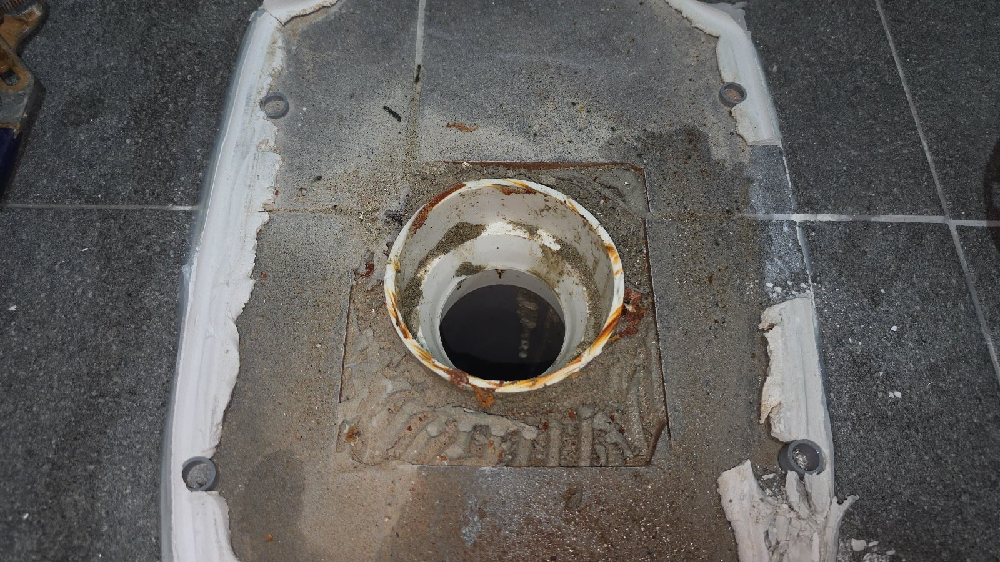
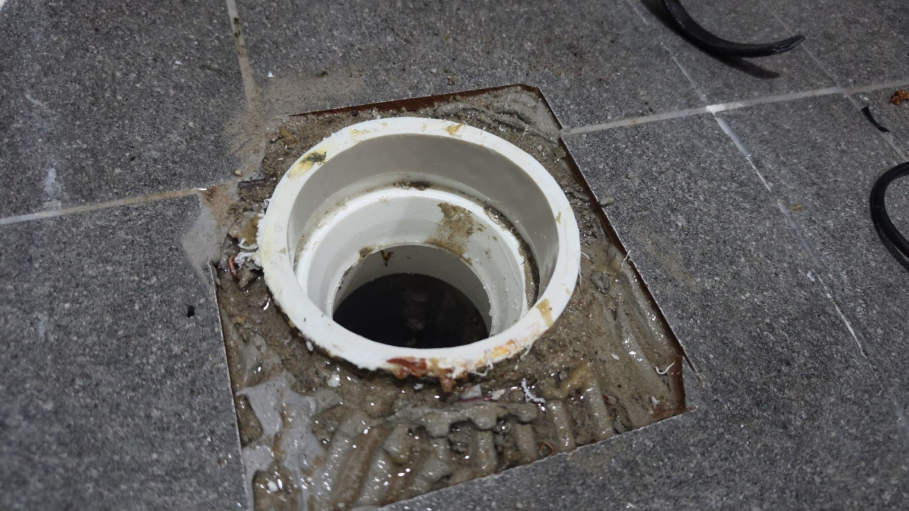
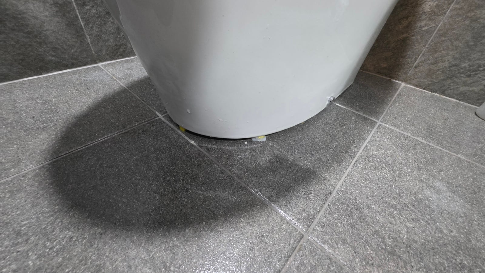
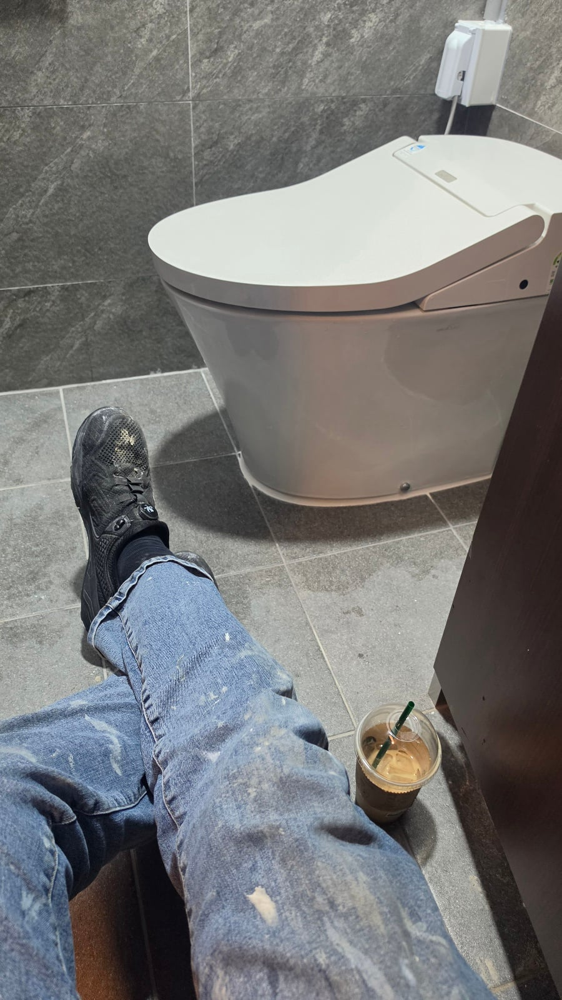

변기를 고치러 강남에 감
대략 한달 전 변기수리 예약했다가 변기를 다른걸로 교체한다며 취소한 집 뭐가 잘 안됐는지 다시 방문을 해달라고 했음
쪼금 꼬름 했지만 그때 당일 취소도 아니었고 특별히 이슈는 없었으니 안간다고 하기도 좀 그래서 갔음
가정집인줄 알았는데 방문 해보니 오피스
내부 리모델링 공사를 새로 했고 변기에서 냄새가 나는 상태

(혐짤아닙니다 누런거 소켓 플라스틱 녹은겁니다 깨끗합니다 )
뜯어보니 이 상태 레듀샤라는 일종의 소켓 부속 인데 말 그대로 소켓이라 배관을 한겹 넣어야 하지만 누락된 상태
당연히 부속이 밀착이 안되고 헐거우니 냄새가 날수밖에


배관 새로 잘라 넣고 변기 올리고 이제 마감만 하면 되는 상태에서 날 부른 소비자가 하는말
" 이거 저희가 돈 내는게 아니고 인테리어 업체에서 낼꺼라 번호 드릴테니까 얘기해보세요"
아니 그걸 왜 이제 말해요? 그럴꺼면 안왔지. 소리가 목구멍까지 올라왔지만 일단 한번 참고 인테리어랑 통화를 함
통화 대화록
인: 네, 여보세요.
나: 아, 예. 사장님, 저 여기 변기 수리기사인데요.
인: 네.
나: 지금 변기 수리하러 왔거든요.
인: 네.
나: 이게 설치를 잘못해 놓으신 거라서요. 수리는 거의 다 되어가고요.
인: 설치를 잘못했다고요? 설치를 잘못한 건 아닌 것 같고, 그냥 냄새가 난다고 해서요.
나: 설치를 잘못한 게 맞아요. 배관을 안 끼워놔서 그래요. 소켓에다가요.
말하자마자 1초의 고민도 없이 인테리어 업자특유의 그 시비조 말투로 부정을 하더라 ㅋㅋㅋㅋㅋ
변기 떼보지도 않았으면서 설치가 잘됐는지 아닌지 어떻게 안다고 우기는건지 신기함
더 말하면 싸울것 같아서 사진이랑 영상보내줄테니까 확인 하고 입금 빨리 하라고 했음 입금 안되면 철수 안한다고
어지간하면 그냥 알아서 주겠지 하고 나오는데 딱 첫 말투부터 쎄한게 여긴 무조건 돈받고 빠져야 겠다 생각이 들었음
소비자가 재방문해달라고 했을때 뭔가 찝찝했던게 이유가 있었음 ㅋㅋㅋ
그와중에 인테리어는 입금 안하고 소비자는 자기 지금 나가야된다고 같이 나가시자고 은연중에 어필 ㅋㅋㅋ
설치 도중 입금하라고 문자 보냈음에도 끝날때까지 입금 안하길래
"네 먼저 가세요 전 입금 안되면 안갑니다" 하고 자리 잡아 버렸음

한 50분 정도 아무도 없는 빈 사무실 여자 화장실에 앉아서 개드립 보고 놀다가 입금 받고 철수 함
원래 20만원인데 괘씸해서 2만원 더 받음
옛날엔 입금 안해서 설치했던 변기 다시 떼온적도 있었는데 요샌 그정도 막장은 잘 안만나는듯 ㅋㅋㅋ
원래 수금이 제일 스트레스 받지... ㅈ같은 ㅅㄲ들이 너무 많어ㅋㅋㅋㅋ 돈만 제대로 받아도 스트레스 반으로 줄어들듯 갓변기 화팅혀